Day 2
Table of Contents
Day 2
Italy v Albania
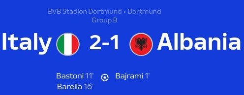
History makers Albania. Cool as Ice Italy. Smooth Chiesa a constant troublemaker. This match had so many to talk about. Albania making history not just with their participation and Italy controlling it and making sure the early surprise didn’t break them. Let’s get into it.
1st Half
We start at the very beginning of the match actually where Italy get a throw-in and Dimarco makes a huge mistake by throwing it near an Albanian player and Bajrami makes no mistake thundering it near Donnarumma’s front post making it the quickest goal in EUROS history. It was a surreal moment for those fans who were taking the mick out of Italians by breaking spaghetti outside the stadium(Yeah that’s peak Euros honestly so it’s to be expected 😂). It didn’t last long as we fast forward just 10 minutes later and a well played corner routine ends with Pellegrini putting in a really good cross to an unmarked Bastoni who didn’t miss to equalize it for Italy. Later on, it was a good amount of chances from Italy where Chiesa and Frattesi were a constant threat to Albania and it was unlucky that they were not able to score. They did eventually find what turned out to be the winner from Barella where Asani’s clearance could only find him and he struck a sweet half volley past a rooted Strakosha.
2nd Half
The 2nd half was more of the same from Italy. Chiesa being a constant threat with his dribbling. Shame he had a issue and he had to be subbed off. Calafiori and Bastoni were super solid at the back even though I was honestly weirded out by the manager picking 2 left footed CB’s but they were really firm and it was a great way for Calafiori to introduce himself on the big stage too. Albania did have a few half chances towards the end with Rey Manaj whizzing the ball past the open goal mouth with no one to put it in and there was a half hearted shot at the end which bent away from goal to close it out.
Player of the Match - F. Chiesa
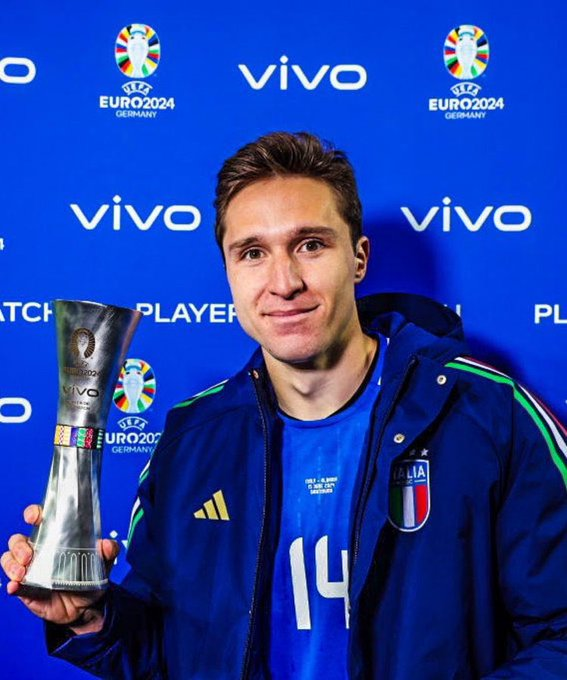
The guy loves turning up for his country no matter what. I remember how much of a livewire he was in the final when they beat England. He showed that today as well by making the runs in behind and being smooth with his dribbling and being a constant threat to the Albania defense. It was well deserved.
Lineups
- Ratings from Fotmob
Italy
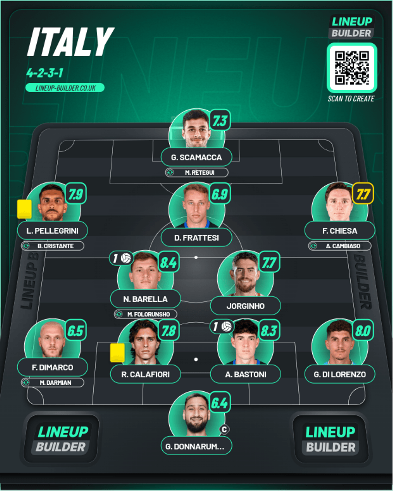
Albania
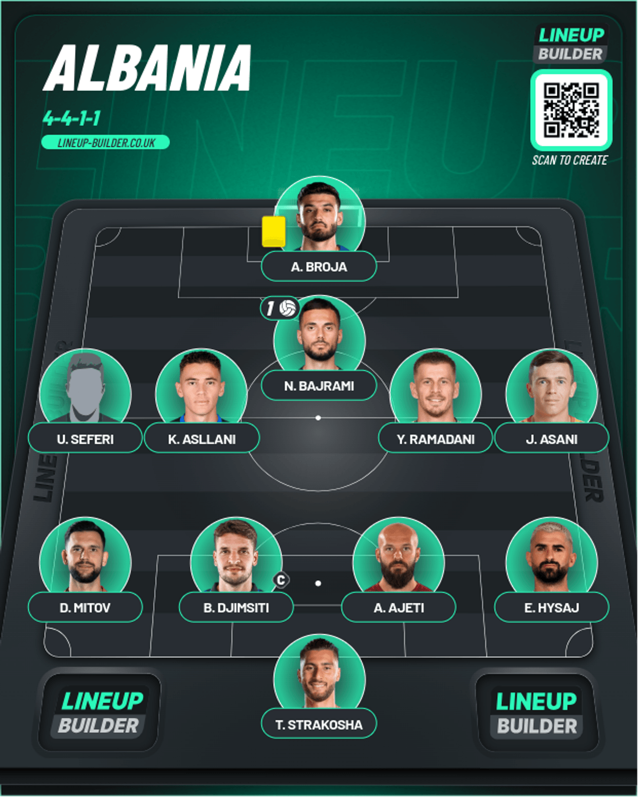
DISCLAIMER: The LW and LB are just placeholders for the actual players and you can find it in the Fotmob link above
Poland v Netherlands
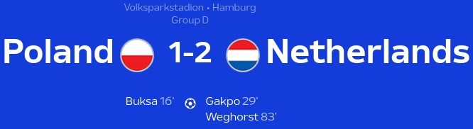
Dutch Domination. Szczesny stands strong. DON’TTT DOUBTTT WOUTTTTT 😤😤😤. What a game. The Dutch got the result that they deserved with how they played in the end given it was looking very dire until the winner. Poland stood firm with Szczesny leading that wall but it broke down eventually. In the end, they just didn’t have enough with Lewandowski being injured as well to add to it. Let’s go deeper into it.
1st Half
We start with a shock. More specifically a Poland corner taken by Zielinski found the head of Buksa(The replacement for Lewandowski) who nodded it in. The Dutch were fairly static defending that which was a huge surprise but it didn’t matter. Poland were in the lead. Later on, we got a slew of chances and half chances from the Dutch with a fair good number of saves from Szczesny before it broke down after Gakpo got the ball back from Ake who won it well and drove forward before striking it. It took a very horrible deflection which can unsettle any keeper and it meant the Dutch were back level. Gakpo did get another really good chance to put them ahead but he blazed it over. Depay was another one who managed to waste his opportunities and was selfish at times too.
2nd Half
We begin with a wild miss from Xavi Simons after being sent free by Gakpo on the counter. When Szczesny was holding firm on the Poland end, Verbruggen was holding firm whenever he was called upon in this half and he was a very good safe pair of hands when it was absolutely necessary for the Dutch to win this game to begin with the best possible foot forward. Then came minute 81:
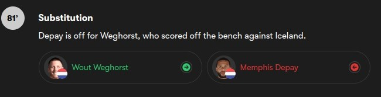
And what a sub it turned out to be. Ake drove forward and sent a low pass into the box that took a deflection from Bednarek but that fell right to Weghorst who didn’t miss with his left boot. In the end, The Dutch got the points they deserved in the end.
Player of the Match - C. Gakpo
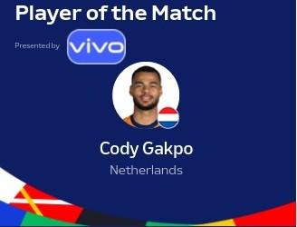
He’s on fire currently for the Dutch. I always thought there was a decent player. It was unfortunate he didn’t get to play much under Klopp this season but I always thought he was decent and he showed that again. He was a constant threat from the left and linked well to get the equalizer. He was peeved at being subbed off but given Weghorst came on and got the win I don’t think you can be too fussed
Lineups
- Ratings from Fotmob
Poland
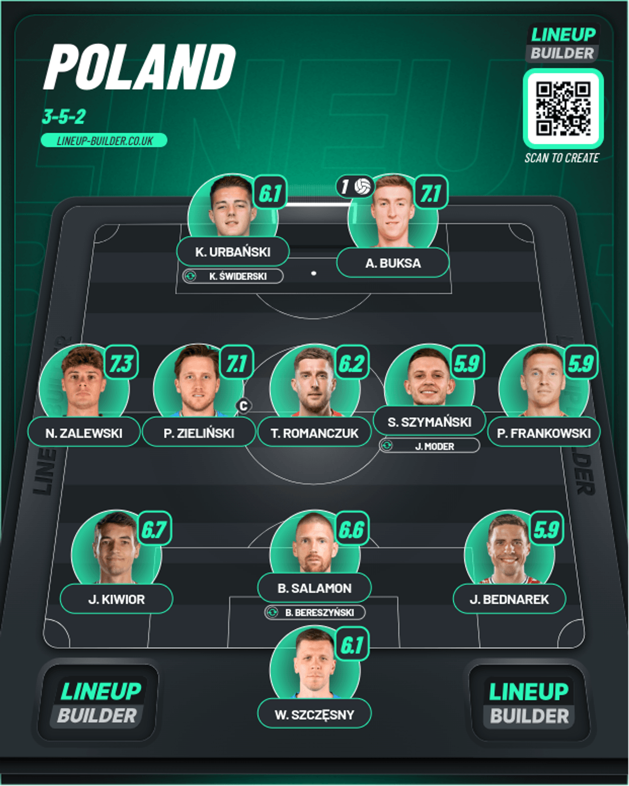
Netherlands
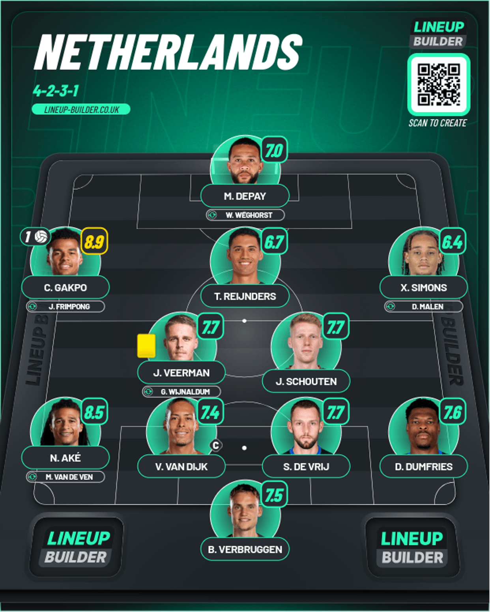
Slovenia v Denmark
A game of 2 halves. Eriksen is well and truly back. 1-0 will always be a dangrous scoreline. The first draw of this tournament has arrived and it could have been avoided by the Danes but Slovenia were genuinely threatening which was actually amazing to see. Let’s get into the reaction
1st Half
We go to minute 17 after some good chances from Denmark there was finally a breakthrough where a throw-in was taken quickly by Bah and it was flicked on by Wind in the box and it fell into the path of Eriksen who found the bottom corner perfectly and what a wholesome moment it was to see him score. More on him in his POTM section because he did win it. Moving on, Eriksen did get another golden chance where Wind pulled the ball back and he was in so much space but he blazed it over. There were chances and Denmark should have taken them to be in a dominant place
2nd Half
Here’s where the tide actually began to shift and massive credit has to go to Slovenia for that actually. Denmark started out of the blocks well trying to carve out chances but the ball just couldn’t go in. Hojberg found Kristiansen on the left side and he sent a low cross in and Hojlund couldn’t bundle it in after a great save from Oblak. Then the tide slowly was threatening to shift with a close chance from Slovenia where a floated cross found Cerin but he didn’t hit the target. Then another one came from a free-kick where a dangerous cross came in but Sporar missed it from probably a few inches out with the goal mouth gaping. Then probably the biggest moment happened, where a Danish header fell towards Sesko who took a touch before thundering a shot which cannoned off the post. Heart in mouth moment for Denmark given it was Sesko who struck it. Then a few minutes later, a corner came in but it headed away and the clearance came straight to Janza on the edge of the box and he hit it first time but it took a deflection before going in. It took a touch off Hjulmand unfortunately. The thing I loved to see was that both teams were looking to attack and not sit back bringing on the faces for that. But it didn’t change beyond that.
Player of the Match - C. Eriksen
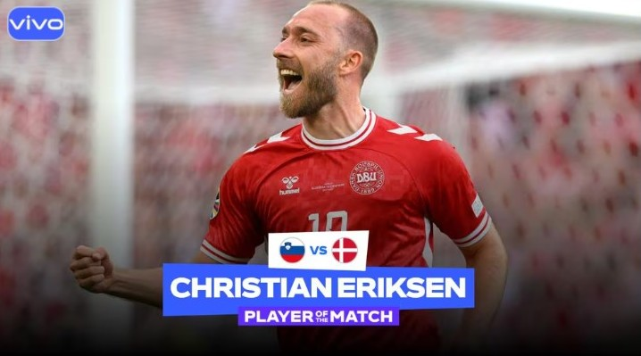
Exactly 1,100 days ago a very dark incident happened where this same person collapsed on the pitch in this very same tournament 3 years ago. After a painstaking number of minutes he was resuscitated after it was found that he had a heart attack. He was in tears after that and he had apparently given his boots to the paramedic because he was sad that he mostl won’t be able to play again. In that 3 years past that incident, he’s lit it up for Brentford, joined United and won 2 trophies and now he scored for his nation for the opener. It couldn’t have come at a better time for a better person. I couldn’t be more happier for him.
Lineups
I’m using the Lineups from Fotmob straight up if there wasn’t enough players available from now on
Slovenia
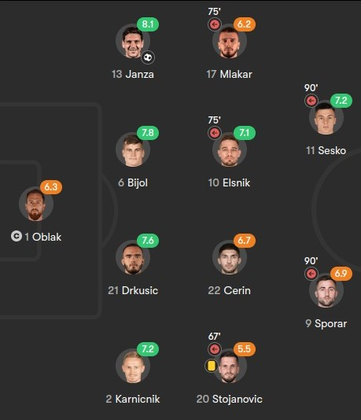
Denmark
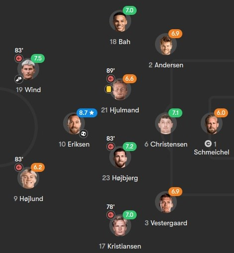